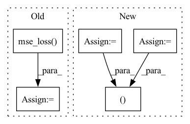

Pattern ID :29185

Before Change
//compute v loss
target_v_value = (new_min_curr_state_q_value - new_curr_state_log_pi).detach()
v_loss = F.mse_loss(curr_state_v_value, target_v_value)
v_loss_value = v_loss.detach().cpu().numpy()
self.v_optimizer.zero_grad()
v_loss.backward()
self.v_optimizer.step()
After Change
new_curr_state_q1_value = self.q1_network(state_batch, new_curr_state_action)
new_curr_state_q2_value = self.q2_network(state_batch, new_curr_state_action)
next_state_q1_value = self.target_q1_network(next_state_batch, next_state_action)
next_state_q2_value = self.target_q2_network(next_state_batch, next_state_action)
next_state_min_q = torch.min(next_state_q1_value, next_state_q2_value)
target_q = (next_state_min_q - self.alpha * next_state_log_pi)
target_q = reward_batch + self.gamma * (1. - done_batch) * target_q
new_min_curr_state_q_value = torch.min(new_curr_state_q1_value, new_curr_state_q2_value)
//compute q loss
q1_loss = F.mse_loss(curr_state_q1_value, target_q.detach())
q2_loss = F.mse_loss(curr_state_q2_value, target_q.detach())
q1_loss_value = q1_loss.detach().cpu().numpy()
q2_loss_value = q2_loss.detach().cpu().numpy()
self.q1_optimizer.zero_grad()
q1_loss.backward()
self.q1_optimizer.step()
self.q2_optimizer.zero_grad()
q2_loss.backward()
self.q2_optimizer.step()
//compute policy loss
policy_loss = ((self.alpha * new_curr_state_log_pi) - new_min_curr_state_q_value).mean()
policy_loss_value = policy_loss.detach().cpu().numpy()
self.policy_optimizer.zero_grad()
policy_loss.backward()
self.policy_optimizer.step()
//compute entropy loss
if self.automatic_entropy_tuning:
alpha_loss = -(self.log_alpha * (new_curr_state_log_pi + self.target_entropy).detach()).mean()
alpha_loss_value = alpha_loss.detach().cpu().numpy()
self.alpha_optim.zero_grad()
alpha_loss.backward()
self.alpha_optim.step()
self.alpha = self.log_alpha.exp()
alpha_value = self.alpha.detach().cpu().numpy()
else:
alpha_loss = torch.tensor(0.).to(util.device)
alpha_value = self.alpha.detach().cpu().numpy()
self.tot_update_count += 1
return q1_loss_value, q2_loss_value, policy_loss_value, alpha_loss_value, alpha_value
def try_update_target_network(self):
if self.tot_update_count % self.update_target_network_interval == 0:
util.soft_update_network(self.q1_network, self.target_q1_network, self.target_smoothing_tau)
In pattern: SUPERPATTERN
Frequency: 3
Non-data size: 5
Instances
Fragment ID: 85898429
Project Name: x35f/unstable_baselines
Commit Name: 0fc82ae6328814fe2dad0c8e0ae1b172d3e5f981
Time: 2021-03-12
Author: ym8411012@126.com
File Name: sac/models.py
M Class Name: SACAgent
N Class Name: SACAgent
M Method Name: update(2)
N Method Name: update(2)
M Parent Class: BaseAgent,torch.nn.Module
N Parent Class: BaseAgent,torch.nn.Module
M File Name: sac/models.py
N File Name: sac/models.py
M Start Line: 75
M End Line: 129
N Start Line: 83
N End Line: 129
'>
Before Change
target_q = self.target_model(next_state).max(1)[0] * (1-done) + reward
q = self.model(state)
q = q.gather(1, action.unsqueeze(-1)).squeeze(-1)
q_loss = F.mse_loss(q, target_q)
self.q_optimizer.zero_grad()
q_loss.backward()
if self.use_grad_clip:
After Change
target_q = self.target_model(next_state).max(1)[0] * (1-done) + reward
q = self.model(state)
q = q.gather(1, action.unsqueeze(-1)).squeeze(-1)
q_loss = ((q - target_q).pow(2)*weights).mean()
td_error = torch.abs(q.detach() - target_q.detach()) // used in prioritized experience replay
self.q_optimizer.zero_grad()
q_loss.backward()
if self.use_grad_clip:
nn.utils.clip_grad_norm_(self.model.q_params, self.max_grad_norm)
self.q_optimizer.step()
return [q_loss.item()], td_error
def update_target(self):
for target_param, param in zip(self.target_model.parameters(), self.model.parameters()):
target_param.detach_()
'>
Fragment ID: 85898442
Project Name: karlxing/rlcodebase
Commit Name: 3dff497e3c5cff01ef5340a2240d90eae0c5b8d5
Time: 2020-10-11
Author: jinweixing1006@gmail.com
File Name: rlcodebase/policy/dqn_policy.py
M Class Name: DQNPolicy
N Class Name: DQNPolicy
M Method Name: learn_on_batch(2)
N Method Name: learn_on_batch(2)
M Parent Class: BasePolicy
N Parent Class: BasePolicy
M File Name: rlcodebase/policy/dqn_policy.py
N File Name: rlcodebase/policy/dqn_policy.py
M Start Line: 38
M End Line: 47
N Start Line: 32
N End Line: 49
'>
Before Change
def StegoLoss(secret, cover, container, container_2x, revealed, beta):
loss_cover = F.mse_loss(cover, container)
loss_secret = nn.L1Loss()
loss_spectrum = F.mse_loss(container, container_2x)
loss = (1 - beta) * (loss_cover) + beta * loss_secret(secret, revealed)
return loss, loss_cover, loss_secret(secret, revealed), loss_spectrum
After Change
def StegoLoss(secret, cover, container, container_2x, revealed, beta):
loss_L1 = nn.L1Loss()
loss_cover = loss_L1(cover, container)
loss_secret = loss_L1(secret, revealed)
loss_spectrum = loss_L1(container, container_2x)
loss = (1 - beta) * loss_cover + beta * loss_secret
return loss, loss_cover, loss_secret, loss_spectrum
'>
Fragment ID: 85898427
Project Name: margaritageleta/pixinwav
Commit Name: c85f63097aebb653073b3bf5ed5026c6382deccb
Time: 2021-03-08
Author: noticiasmundiales99@gmail.com
File Name: src/losses.py
M Class Name: AnonimousClass
N Class Name: AnonimousClass
M Method Name: StegoLoss(6)
N Method Name: StegoLoss(6)
M Parent Class:
N Parent Class:
M File Name: src/losses.py
N File Name: src/losses.py
M Start Line: 88
M End Line: 92
N Start Line: 87
N End Line: 92